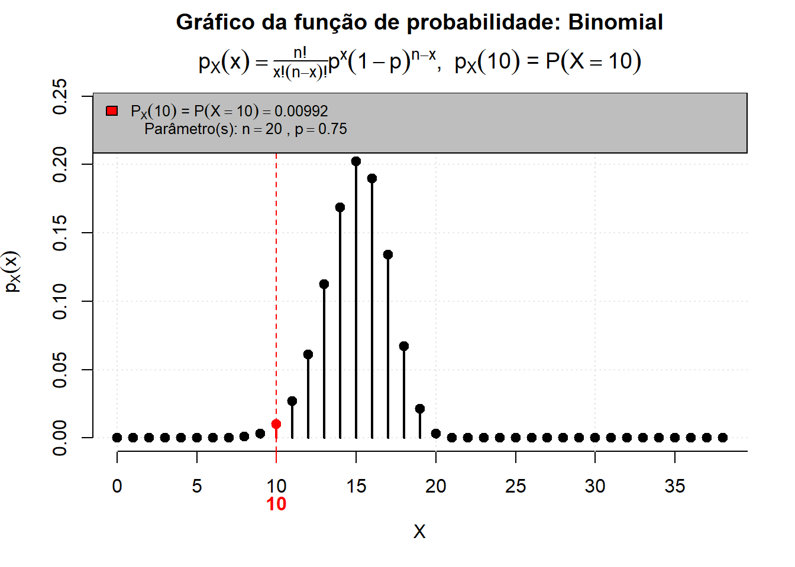
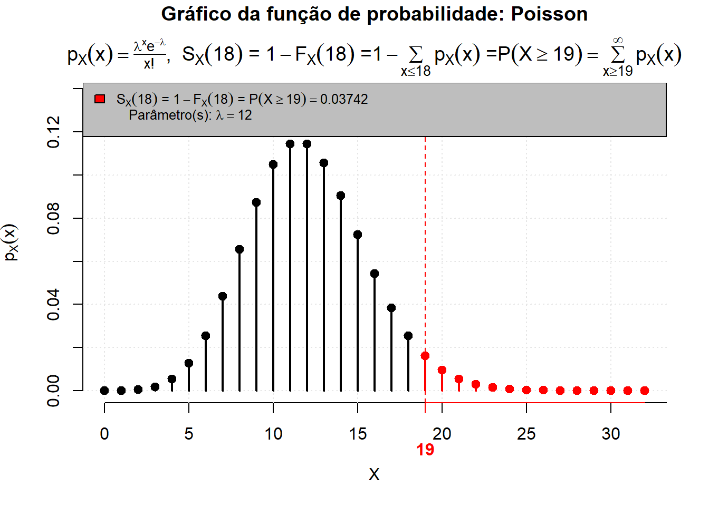
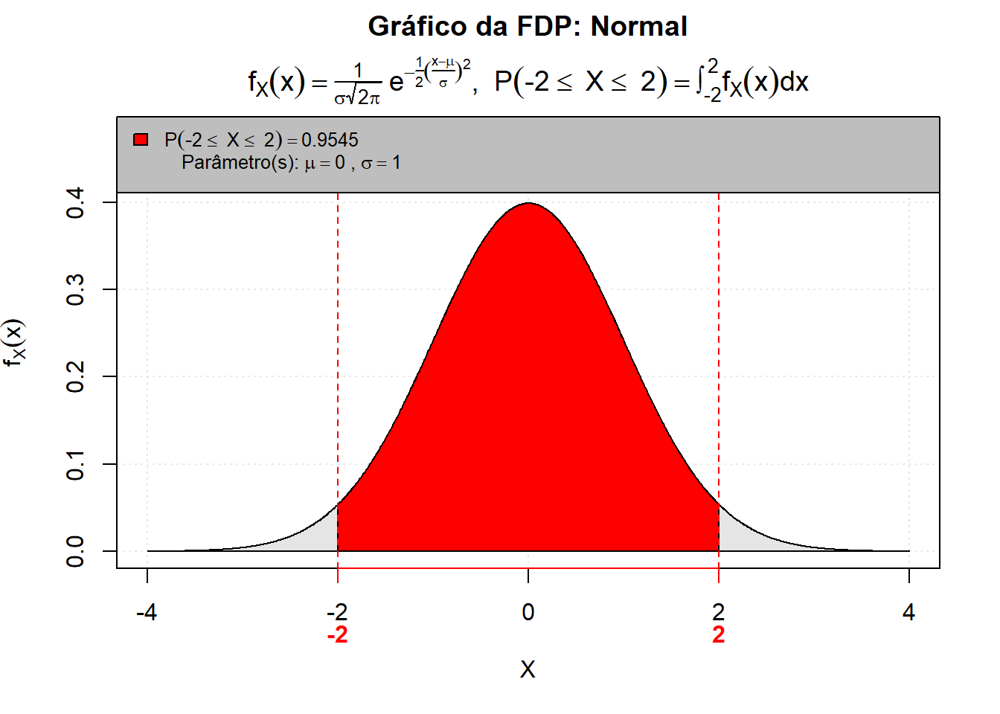
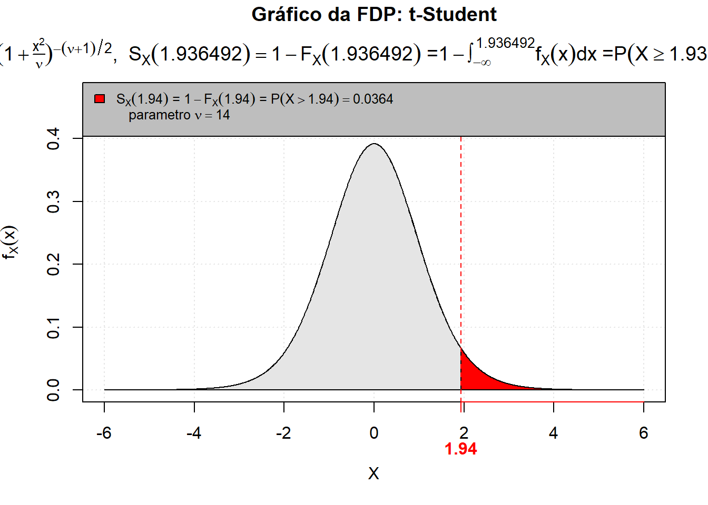

Código



Estatística e Probabilidade
Prof. Ben Dêivide (DEFIM/CAP/UFSJ)
Distribuições de probabilidade são funções matemáticas que descrevem a probabilidade de ocorrência de diferentes resultados em um experimento aleatório. Estes modelos permitem analisar fenômenos incertos, tornando possíveis previsões e inferências sobre os dados.
Neste relatório, serão exploradas as distribuições Binomial, de Poisson e Normal, suas características, aplicações e como elas se relacionam com a estatística e a probabilidade. Também serão apresentadas duas distribuições de variáveis contínuas e duas de variáveis discretas, destacando suas propriedades e uso. Para essas simulações e visualizações será utilizado o R e o pacote leem para simular e visualizar essas distribuições.
Para complementar o entendimento, serão discutidos os conceitos de variáveis aleatórias, continuas e discretas, e como as distribuições de probabilidade se encaixam nesse contexto.
Apresentar e discutir possíveis aplicações das distribuições de probabilidade, destacando suas características e diferenças teóricas e estatísticas.
leem para simular e visualizar exemplo das distribuições de probabilidade.Variáveis aleatórias são funções que associam um número real a cada resultado possível de um experimento aleatório. Elas podem ser classificadas em dois tipos principais: variáveis discretas e variáveis contínuas.
Variáveis discretas assumem valores em um conjunto finito ou contável (infinito). Geralmente são resultados de contagens.
Exemplos: - Número de caras em 10 lançamentos de uma moeda. - Número de pessoas em um ambiente. - Número de itens defeituosos em um lote de produtos.
Gráficos comuns para variáveis discretas incluem gráficos de barras e histogramas, já que eles destacam a probabilidade de cada valor. Como exemplo:
Variáveis contínuas podem assumir qualquer valor dentro de um intervalo de números reais. Diferente das discretas, elas não resultam das contagens, mas das medições (assim podem ter infinitas casas decimais)
Exemplos: - Comprimento de um objeto. - Temperatura ao longo do dia. - Tempo gasto para completar uma tarefa.
Variáveis contínuas são representadas gráficamente por histogramas (com as áreas das barras somando 1) e gráficos de densidade (mostram a distribuição dessa probabilidade ao longo de uma curva contínua). Como exemplo:
As distribuições de probabilidade descrevem como os valores de uma variável aleatória estão distribuídos. Elas fornecem uma maneira de modelar e entender a incerteza associada a eventos aleatórios.
A distribuição Binomial é aplicada a variáveis discretas e é usada para modelar o número de sucessos em uma sequência de n experimentos independentes, onde cada experimento tem apenas dois resultados possíveis (sucesso ou fracasso) com a probabilidade de sucesso sendo constante. Uma variável aleatória que segue uma distribuição Binomial é denotada por \(X \sim \text{Binomial}(n, p)\), onde \(n\) é o número de experimentos e \(p\) é a probabilidade de sucesso em cada experimento.
Essa distribuição é caracterizada por dois parâmetros: o número de experimentos (n) e a probabilidade de sucesso em cada experimento (p). A função de massa de probabilidade da distribuição Binomial é dada por:
\[P(X = k) = \binom{n}{k} p^k (1-p)^{n-k} \tag{1}\]
Onde \(k\) é o número de sucessos, \(\binom{n}{k}\) é o coeficiente binomial, dado por \(\frac{n!}{k!(n-k)!}\), \(p\) é a probabilidade de sucesso e \(1-p\) é a probabilidade de fracasso.
Em sistemas mecatrônicos, é comum utilizar uma redundância de sensores para aumentar a confiabilidade do sistema. Por exemplo, imagine um sistema para evitar colisões em um veículo autônomo, o veículo pode ser equipado com múltiplos sensores independentes para detectar obstáculos ne proximidade, se a probabilidade de falha de um sensor é de \(q = 1-p\), essa distribuição permite calcular a probabilidade do sistema permanecer operacional caso o número k de sensores.
Para esta demonstração, vamos considerar um cenário onde o veículo possui \(n = 5\) sensores ultrassônicos idênticos. Para garantir a segurança, o veículo só se movimenta se pelo menos 3 dos sensores forem ativados, \(k \geq 3\). Supondo que cada sensor tem 90% de funcionar corretamente, \(p = 0.9\), consequentemente, \(1-p = 0.1\), 10% de falha. A probabilidade de o veículo se movimentar com segurança pode ser calculada utilizando a distribuição Binomial, somando as probabilidades de obter 3, 4 ou 5 sucessos:
\[P(X \geq 3) = P(X = 3) + P(X = 4) + P(X = 5)\]
\[P(X = 3) = \binom{5}{3} (0.9)^3 (0.1)^2 = 0.0729\]
\[P(X = 4) = \binom{5}{4} (0.9)^4 (0.1)^1 = 0.32805\]
\[P(X = 5) = \binom{5}{5} (0.9)^5 (0.1)^0 = 0.59049\]
\[P(X \geq 3) = 0.0729 + 0.32805 + 0.59049 = 0.99144\]
Ou seja, a probabilidade de o veículo se movimentar com segurança é de aproximadamente 99.144%.
Com o R e o pacote leem, podemos calcular essa probabilidade de forma mais eficiente:
A distribuição de Poisson é muito utilizada para modelar o número de eventos que ocorrem em um intervalo fixo (de tempo ou espaço) pode ser entendida como um caso limite da Distribuição Binomial, para \(n \to \infty\), e a probabilidade de sucesso muito pequena, desde que esses eventos ocorram com uma taxa média constante e sejam independentes entre si. Uma variável aleatória que segue uma distribuição de Poisson é denotada por \(X \sim \text{Poisson}(\lambda)\), onde \(\lambda\) é a taxa média de eventos por intervalo.
A função de massa de probabilidade da distribuição de Poisson é dada por:
\[P(X = k) = \frac{\lambda^k e^{-\lambda}}{k!} \tag{2}\]
Onde \(k\) é o número de eventos, \(\lambda\) é a taxa média de eventos e \(e\) é a base do logaritmo natural.
Em sistemas embarcados, é fundamental dimensionar corretamente a memória para evitar perda de dados. Por exemplo, uma Unidade de Controle Eletrônico (ECU) conectada a uma rede CAN, que recebe mensagens de forma contínua e aleatória.
Considerando um cenário onde as mensagens chegam à ECU a uma taxa média de 12 mensagens a cada janela de 10 milissegundos, \(\lambda = 12\). Para garantir o processamento, o buffer do microcontrolador suporta o armazenamento de até 18 mensagens. A falha (overflow) ocorre se chegarem mais mensagens que a capacidade, \(X > 18\).
A probabilidade de o buffer transbordar pode ser calculada utilizando a distribuição de Poisson, subtraindo de 1 a soma das probabilidades de o buffer suportar a carga (receber de 0 a 18 mensagens):
\[P(X > 18) = 1 - P(X \leq 18)\]
\[P(X \leq 18) = \sum_{k=0}^{18} \frac{12^k e^{-12}}{k!}\]
Expandindo o somatório, tem-se:
\[P(X \leq 18) = \frac{12^0 e^{-12}}{0!} + \frac{12^1 e^{-12}}{1!} + \frac{12^2 e^{-12}}{2!} + ... + \frac{12^{18} e^{-12}}{18!}\]
Os resultados individuais de cada termo do somatório podem ser calculados, mas é mais eficiente utilizar o R e o pacote leem para obter a probabilidade de forma rápida:

[1] 0.03742Calcula-se:
\[P(X > 18) = 0.03742\]
A distribuição Normal, também conhecida como distribuição Gaussiana, é uma distribuição de probabilidade contínua que é simétrica em torno de sua média, mostrando que os dados próximos à média são mais frequentes em ocorrência do que os dados distantes da média. Uma variável aleatória que segue uma distribuição Normal é denotada por \(X \sim \text{Normal}(\mu, \sigma^2)\), onde \(\mu\) é a média e \(\sigma^2\) é a variância.
Esta distribuição é a mais importante na estatística devido ao Teorema Central do Limite, que afirma que a soma de um grande número de variáveis aleatórias independentes e identicamente distribuídas tende a seguir uma distribuição Normal, independentemente da distribuição original das variáveis.
A função de densidade de probabilidade da distribuição Normal é dada por:
\[f(x) = \frac{1}{\sigma \sqrt{2\pi}} e^{-\frac{(x - \mu)^2}{2\sigma^2}} \tag{3}\]
Onde \(x\) é o valor da variável aleatória, \(\mu\) é a média, \(\sigma\) é o desvio padrão e \(e\) é a base do logaritmo natural.
Diferente das distribuições discretizadas, uma distribuição contínua é calculada através da integração da região de interesse sob a curva da função de densidade de probabilidade.
Para função que da origem a Distribuição Normal, calcular a integral de forma analítica é um trabalho complexo, por isso se recorre ao calculo numérico ou ao uso de tabelas de valores da função de distribuição acumulada (CDF) para obter as probabilidades associadas a intervalos específicos. Para simplificar os cálculos, é comum padronizar a variável aleatória Normal, transformando-a em uma variável aleatória que segue a Distribuição Normal Padrão.
A distribuição Normal Padrão é um caso especial da distribuição Normal onde a média é igual a 0 e o desvio padrão é igual a 1, ou seja, \(Z \sim \text{Normal}(0, 1)\). A função de densidade de probabilidade da distribuição Normal Padrão é dada por:
\[f(z) = \frac{1}{\sqrt{2\pi}} e^{-\frac{z^2}{2}} \tag{4}\]
Onde \(z\) é o valor da variável aleatória padronizada. A distribuição Normal Padrão é amplamente utilizada para calcular probabilidades e quantis associados à distribuição Normal, facilitando a comparação entre diferentes conjuntos de dados e a realização de inferências estatísticas.
Para calcular a probabilidade de uma variável aleatória Normal estar dentro de um intervalo específico, é necessário padronizar os valores utilizando a fórmula:
\[Z = \frac{X - \mu}{\sigma} \tag{5}\]
Regra Empírica (68-95-99.7): Em uma distribuição normal perfeita: 68% dos dados estão a 1 desvio padrão da média. 95% dos dados estão a 2 desvios padrões da média. 99,7% dos dados estão a 3 desvios padrões (o famoso “Três Sigma”)
Em processos de usinagem e manufatura, é fundamental analisar as tolerâncias dimensionais para garantir o encaixe correto de peças mecânicas. Por exemplo, imagine a produção em série de um eixo de aço em um torno CNC, onde pequenas variações dimensionais são inevitáveis.Para esta demonstração, vamos considerar um cenário onde o diâmetro alvo do eixo é de 10.00 mm.
Devido à precisão da máquina, os diâmetros produzidos seguem uma distribuição Normal com média \(\mu = 10.00\) mm e desvio padrão \(\sigma = 0.05\) mm. Para que a peça seja aprovada no controle de qualidade, seu diâmetro deve estar entre o Limite Inferior de Especificação (LSL) de 9.90 mm e o Limite Superior (USL) de 10.10 mm. A probabilidade de uma peça ser aprovada (estar dentro da tolerância) pode ser calculada utilizando a distribuição Normal, convertendo os valores para a distribuição Normal Padrão (\(Z\)):
\[P(9.90 \leq X \leq 10.10) = P\left(\frac{9.90 - 10.00}{0.05} \leq Z \leq \frac{10.10 - 10.00}{0.05}\right)\]
\[P(9.90 \leq X \leq 10.10) = P(-2 \leq Z \leq 2)\]
Como a resolução de forma analítica é complexa, utiliza-se ferramentas como o R e o pacote leem para calcular essa probabilidade:
Como os valores foram padronizados, usaremos a distribuição Normal Padrão (Z ~ N(0,1)) no código para ter o gráfico da área de aceitação

[1] 0.9545\[P(9.90 \leq X \leq 10.10) = P(-2 \leq Z \leq 2) = 0.9545\]
Além das distribuições Binomial, de Poisson e Normal, existem diversas outras distribuições de probabilidade que são amplamente utilizadas em diferentes contextos.
A distribuição Geométrica é uma distribuição de probabilidade discreta que modela o número de tentativas necessárias para obter o primeiro sucesso em uma sequência de experimentos independentes, onde cada experimento tem apenas dois resultados possíveis (sucesso ou fracasso) e a probabilidade de sucesso é constante. Uma variável aleatória que segue uma distribuição Geométrica é denotada por \(X \sim \text{Geometric}(p)\), onde \(p\) é a probabilidade de sucesso em cada experimento. Diferente da Distribuição BInomial, a Geométrica teoricamente pode ir até o infinito.
\[P(X = k) = (1-p)^{k-1} p \tag{6}\]
Em processos de inspeção de qualidade automatizados, modela-se a quantidade de tentativas necessárias até que um evento específico ocorra.
considere que a probabilidade de um braço robótico produzir uma solda defeituosa é de 5%, \(p = 0.05\). A probabilidade de a primeira solda defeituosa ser encontrada exatamente na 4ª inspeção (\(k = 4\)) pode ser calculada utilizando a distribuição Geométrica. Isso significa que ocorrerão 3 inspeções bem-sucedidas (sem defeito) antes do primeiro “sucesso” estatístico (encontrar o defeito):
Na Distribuição Geométrica, k é o numero da tentativa para o primeiro sucesso ocorrer, no caso, se o defeito é o sucesso e ocorre na 4° inspeção, tiveram 3 sucessos de soldegem (inspeções sem defeitos) e a 1° falha (solda com defeito) na 4° tentativa
\[P(X = k) = (1 - p)^{k - 1} p\]
\[P(X = 4) = (1 - 0.05)^{4 - 1} (0.05)\]
\[P(X = 4) = (0.95)^3 (0.05)\]
\[P(X = 4) \approx 0.8573 \times 0.05 \approx 0.0428\]
No R e o pacote leem, a probabilidade pode ser calculada da seguinte forma:
A distribuição Hipergeométrica é uma distribuição de probabilidade discreta que modela o número de sucessos em uma amostra de tamanho fixo retirada sem reposição de uma população finita que contém um número específico de sucessos e fracassos. Uma variável aleatória que segue uma distribuição Hipergeométrica é denotada por \(X \sim \text{Hypergeometric}(N, K, n)\), onde \(N\) é o tamanho da população, \(K\) é o número total de sucessos na população e \(n\) é o tamanho da amostra.
\[P(X = k) = \frac{\binom{K}{k} \binom{N-K}{n-k}}{\binom{N}{n}} \tag{7}\]
Em processos de controle de qualidade, a distribuição Hipergeométrica pode ser utilizada para modelar a probabilidade de encontrar um número específico de itens defeituosos em uma amostra retirada de um lote.
Por exemplo, considere um lote de 100 peças, onde 10 são defeituosas (\(N = 100\), \(K = 10\)). Se retirarmos uma amostra de 20 peças (\(n = 20\)), a probabilidade de encontrar exatamente 3 peças defeituosas na amostra (\(k = 3\)) pode ser calculada utilizando a distribuição Hipergeométrica:
\[P(X = k) = \frac{\binom{K}{k} \binom{N-K}{n-k}}{\binom{N}{n}}\]
\[P(X = 3) = \frac{\binom{10}{3} \binom{90}{17}}{\binom{100}{20}}\]
No R e o pacote leem, a probabilidade pode ser calculada da seguinte forma:
Insert the value of 'm' argument: [1] NAO leem não está funcionando para a distribuição Hipergeométrica… Aguardando correção do pacote.
A distribuição Exponencial é uma distribuição de probabilidade contínua que modela o tempo entre eventos em um processo de Poisson, onde os eventos ocorrem de forma independente e a uma taxa constante. Uma variável aleatória que segue uma distribuição Exponencial é denotada por \(X \sim \text{Exponential}(\lambda)\), onde \(\lambda\) é a taxa média de eventos por unidade de tempo.
\[f(x) = \lambda e^{-\lambda x} \tag{8}\]
Em sistemas de confiabilidade, a distribuição Exponencial é frequentemente utilizada para modelar o tempo até a falha de componentes eletrônicos ou mecânicos, permitindo prever a vida útil e planejar manutenções preventivas.
Exemplo: Considere um componente eletrônico que tem uma taxa média de falha de 0.01 falhas por hora (\(\lambda = 0.01\)). A probabilidade de o componente falhar dentro de 100 horas pode ser calculada utilizando a distribuição Exponencial:
\[P(X \leq 100) = \int_{0}^{100} 0.01 e^{-0.01 x} dx\]
\[P(X \leq 100) = 0.01 \cdot \int_{0}^{100} e^{-0.01 x} dx\]
\[P(X \leq 100) = 0.01 \cdot \left[-\frac{1}{0.01} e^{-0.01 x}\right]_{0}^{100}\]
\[P(X \leq 100) = \left[e^{-0.01 x}\right]_{0}^{100}\]
\[P(X \leq 100) = e^{-0} - e^{-1} \approx 0.6321\] ::: {.callout-note} Na Distribuição Exponencial, uma curiosidade interessante é que a propriedade de falta de memória (uma característica única dela) que é fundamental em estudos de confiabilidade. Ela indica que a probabilidade de ocorrência de um evento futuro independente do tempo decorrido, é ideal para modelar componentes que não sofrem desgaste físico gradual, mas falham por conta de eventos aleatórios externos. :::
Com o leem:
A distribuição T de Student é uma distribuição de probabilidade contínua que é usada para estimar a média de uma população quando o tamanho da amostra é pequeno e a variância populacional é desconhecida. Uma variável aleatória que segue uma distribuição T de Student é denotada por \(X \sim t(\nu)\), onde \(\nu\) é o número de graus de liberdade, geralmente calculado como o tamanho da amostra menos um (\(\nu = n - 1\)).
\[f(t) = \frac{\Gamma\left(\frac{\nu + 1}{2}\right)}{\sqrt{\nu \pi} \Gamma\left(\frac{\nu}{2}\right)} \left(1 + \frac{t^2}{\nu}\right)^{-\frac{\nu + 1}{2}} \tag{9}\]
A função \(\Gamma\) é a função gama, que generaliza o fatorial para números reais e complexos. Para um número inteiro positivo \(n\), \(\Gamma(n) = (n-1)!\).
Em análise de dados, a distribuição T de Student é frequentemente utilizada para realizar testes de hipóteses sobre a média de uma população, especialmente quando o tamanho da amostra é pequeno e a variância populacional é desconhecida.
Exemplo: Considere um estudo onde se deseja comparar a média de um grupo experimental com uma média conhecida. Suponha que temos uma amostra de 15 indivíduos (\(n = 15\)) e queremos testar se a média do grupo é significativamente diferente de 100. A média amostral é de 105 e o desvio padrão amostral é de 10. O número de graus de liberdade seria \(\nu = n - 1 = 14\). A probabilidade associada ao valor observado pode ser calculada utilizando a distribuição T de Student:
\[P(\bar{X} \geq 105) = P\left(t \geq \frac{105 - 100}{10 / \sqrt{15}}\right)\]
\[P(\bar{X} \geq 105) = P\left(t \geq \frac{5}{10 / \sqrt{15}}\right)\]
\[P(\bar{X} \geq 105) = P\left(t \geq \frac{59}{\sqrt{15}}\right)\]
\[P(\bar{X} \geq 105) \approx P\left(t \geq 1.9365\right)\]
A função só pode ser calculada numericamente. Com o leem:

[1] 0.03663\[P(\bar{X} \geq 105) \approx 0.03663\]
Qual a diferença fundamental entre uma variável aleatória discreta e uma contínua quando usamos o pacote leem?
O que acontece com o gráfico da Distribuição Binomial quando nós aumentamos o número de tentativas?
Porque a Distribuição de Poisson pode ser chamada de distribuição de eventos raros?
Porque a Distribuição Normal é considerada a distribuição padrão da natureza e engenharia?
Sobre o impacto da redundancia na Distribuição Binomial, se aumentássemos o número de sensores de 5 para 7, como a probabilidade de segurança (k >= 3) se comportaria?
Em quais situações o uso da Distribuição Binomial no teste dos sensores seria tecnicamente incorreto, exigindo usar a Hipergeométrica?
A propriedade de falta de memória da Exponencial é realista para componentes que sofrem desgaste mecânico ao longo do tempo?
Como o Teorema Central do Limite justifica usar a Distribuição Normal quando não conhecemos a distribuição original dos dados?
A diferença é o que o R conta, em variáveis discretas (valores isolados: 1, 2, 10,…), e em um gráfico do leem geralmente podemos ver barras separadas; agora em variáveis contínuas são medidas (pode ser qualquer valor real), e no leem vemos a chance de pegar uma medida entre duas outras, trabalhamos com o cálculo de áreas sob a curva de densidade.
Conforme o número de tentativas aumenta, as barras ficam mais próximas e a distribuição se torna mais simétrica, o que nos mostra que no limite a Distribuição se aproxima da Normal.
A Distribuição de Poisson modela ocorrências em um intervalo em que a chance de um evento acontecer é quase zero, mas no total do intervalo temos uma média, usando o leem, se tivermos uma média pequena, o gráfico apresenta uma forte assimetria positiva (estar mais a direita, assim como a cauda do gráfico) quando a média é pequena ela concentra as probabilidades em valores pequenos, o que nos mostra que é muito provável ter poucos eventos e muito raro ter 10.
Com o Teorema do Limite Central, os erros de medição de um sensor tendem a se cancelar ou se somar na engenharia, ficando na maior parte das leituras perto da média, no leem usamos muito a função para calcular a cauda (parte rala) da distribuição, se o gráfico do leem mostra uma área quase invisível, o processo é bem seguro.
Quando aumentamos o número de sensores mantendo o critério de funcionamento K >= 3, a probabilidade de segurança aumentaria muito, isso ocorre porque a Distribuição Binomial tem mais combinações de sucesso para atingir o requisito mínimo; o que aconteceria é que o somatório teria mais termos, deixando o sistema bem mais robusto a falhas individuais.
A Distribuição Binomial será incorreta se testarmos sensores retirados em um lote pequeno e finito sem reposição. A Distribuição Binomial pressupõe que a probabilidade de sucesso é constante em todas as tentativas (como se tivesse reposição), já a Distribuição Hipergeométrica ajusta a probabilidade a cada retirada (isso porque a composição do lote muda. Se o lote total fosse de 20 sensores e tirássemos 5 para teste, a falta de um sensor alteraria a chance do próximo), e por isso é mais precisa.
A propriedade de falta de memoria afirma que a probabilidade de falha é constante, independente de quanto tempo o componente já operou (ideal para modelar falhas aleatórias em componentes eletrônicos), mas falha em representar componentes mecânicos (que sofrem desgaste físico), para esses casos de envelhecimento, outras distribuições seriam mais adequadas do que a Distribuição Exponencial.
O Teorema Central do Limite é fundamental por afirmar que independentemente da forma da distribuição original dos dados, a distribuição da média de uma grande amostra tenderá para uma Distribuição Normal conforme o tamanho da amostra aumenta (o que permite que engenheiros calculem probabilidades baseadas na curva de Gauss)